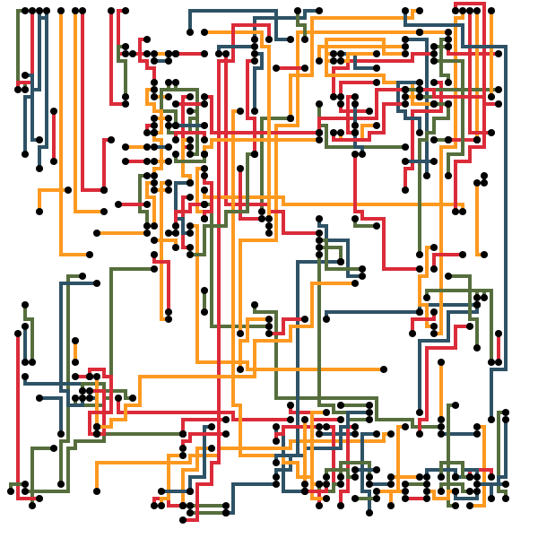
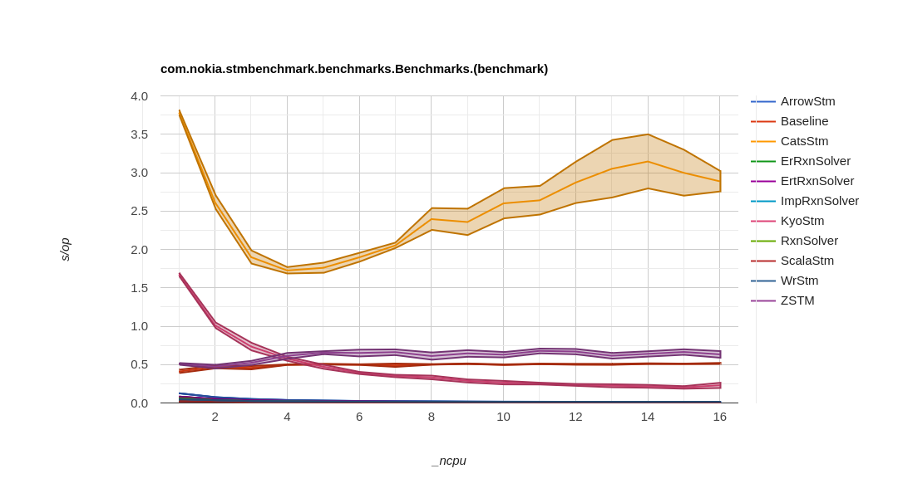
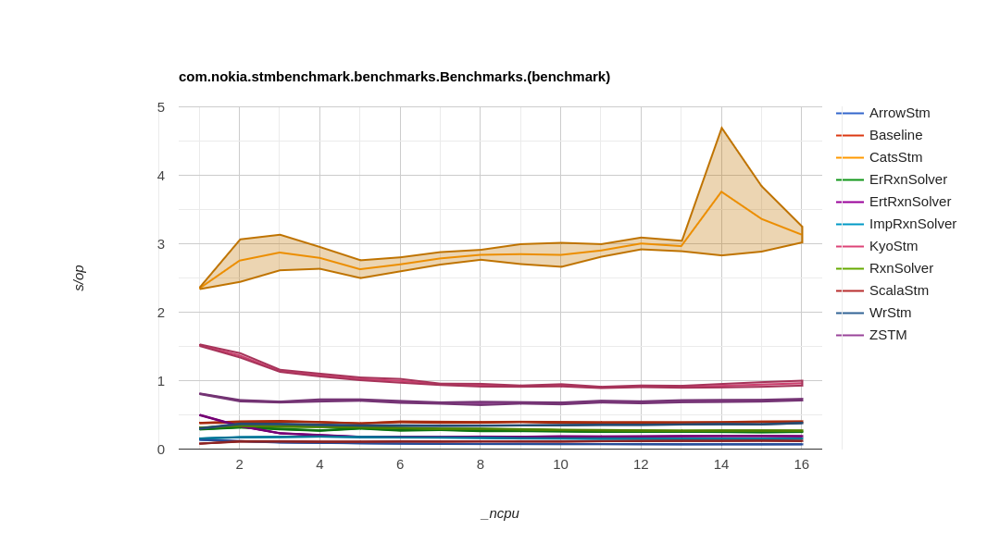
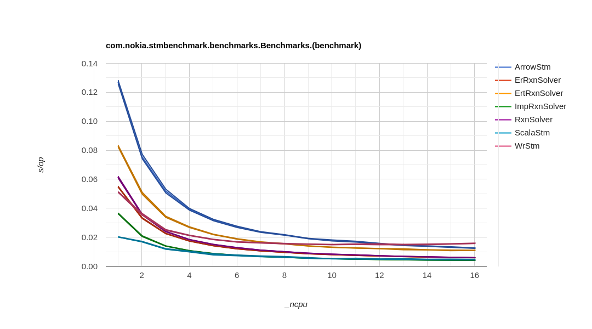
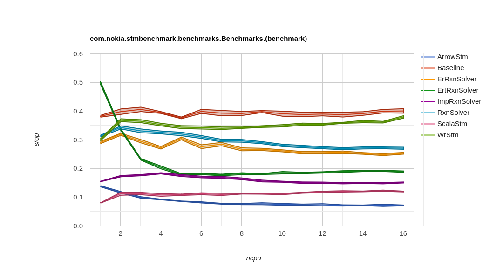

class: center, middle # Performance Evaluation of<br />Software Transactional Memory Implementations .left-column[ Dániel Urbán<br /> .smaller-font-size[Nokia Bell Labs] ] .right-column[ Péter Fazekas<br /> .smaller-font-size[Nokia Bell Labs] ] .smaller-font-size[ ICSEA 2025, Lisbon, Portugal<br /> 2025-10-01 ] --- # Agenda - What is Software Transactional Memory? - Benchmarking STM implementations - Our benchmarks - Results and observations - Future work --- # Software Transactional Memory (STM) ## What is it? - *Transactional:* - like database transactions - ACI of "ACID" (atomicity, consistency, isolation) - *Memory:* - works on objects/pointers in main memory (RAM) - *Software:* - implemented in software - (so it's not, e.g., a special hardware) -- ## Why is it useful? High level approach to concurrency and parallelism, without (most of) the downsides of using manual locks - we can read/write multiple memory locations (intertwined with arbitrary logic), and the reads/writes appear to take effect atomically (on commit) - i.e., we get thread safety, but it's easier to use than using locks directly - e.g., because the STM engine takes care of deadlock avoidance --- # Benchmarking STMs STM is a general approach to concurrency/parallelism - various algorithms and implementation strategies exist - implementations (STM engines) are available for various programming languages (C, C++, Java, Scala, Haskell, ...) -- Various benchmark suites are also available: - data structure microbenchmarks - binary search trees (implemented with STM), ... - STM-specific benchmark suites: - STAMP, STMBench7 - Lee-TM: - Lee's algorithm, parallelized with STM - previously used to measure STMs implemented for C and Ruby -- - We've also used Lee's algorithm... --- # Lee's Algorithm (overview) - A well-known algorithm to solve the circuit-board routing problem - Lays out "wires" on a circuit board - to connect source-destination endpoints - Minimizes the *cost* of a route - longer routes cost more - crossing wires also cost more <center></center> .smaller-font-size[Source of image: https://chrisseaton.com/truffleruby/ruby-stm/] --- # Lee's Algorithm (details) Solve one route: 1. Expansion: start a "wave" from the source of the route - count the distance (longer wire costs more) - also take into account existing wires (crossing costs more) - stop when the destination is reached 1. Backtracking: go from destination back to source - always choose the lowest cost 1. Laying the route (it will count as an "existing" wire from now on) .left-column[ Solve the whole board: 1. solve all routes; either<br />one-by-one, or in parallel<br />(solve 1 route – 1 transaction) ] .right-column[<center></center>] -- Good for benchmarking STM, because: - Very hard to parallelize with manual locks; easy with STM - We can vary transaction size and conflict rate by varying the input boards --- # Our benchmarks - Benchmarked STM implementations on the JVM (Java Virtual Machine) - Selected various STM engines for functional programming languages: - Scala: Cats STM, CHOAM, Kyo STM, ScalaSTM, ZSTM - Kotlin: arrow-fx-stm - Implemented Lee's algorithm with all of these - Additionally (where applicable) implemented some variants: - optimization by weakened consistency (lack of _opacity_) - optimization with _early release_ - functional API wrapper of an imperative STM API (ScalaSTM) -- Experimental setup: - Scala 3.7.0, OpenJDK 21 - 2× Intel Xeon E5-2680 with 12 physical cores (i.e., 24 cores in total) - performed measurements with JMH (Java Microbenchmark Harness) - measured the time needed to lay out routes for - various circuit boards - using a varying number of cores/threads --- # Results <center> .left-column[  .smaller-font-size[Short routes, no conflicts]  .smaller-font-size[More realistic board] ] .right-column[  .smaller-font-size[Short routes, no conflicts (zoomed)]  .smaller-font-size[More realistic board (zoomed)] ] </center> --- # Observations - STM engines with purely _functional_ APIs tend to be slower than<br />ones with _imperative_ APIs - GC (garbage collector) pressure - interpretation overhead - The Kotlin STM engine (arrow-fx-stm) beats most of the Scala ones - runs on Kotlin coroutines (vs. Scala fibers) - see also previous point (imperative vs. functional) - Weakening consistency and _early release_ are useful optimizations - especially on inputs with lots of conflicts - Maintaining transaction logs (read/write sets) can be expensive - specifically for ZSTM and Cats STM --- # Future work - More profiling - Optimizing some of these STM engines --- class: center, middle count: false # Thank you! .smaller-font-size[ Benchmark code is open source at: https://github.com/nokia/stm-benchmark ] # Questions? --- class: center, middle count: false # Extra slides --- count: false # Early release - An STM engine typically "logs" memory locations read and written - "read set" and "write set" - _Early release_ is a mechanism to remove items from the read set of a transaction - i.e., releasing those memory locations _earlier_ than the commit of the transaction - Good: reduces transaction conflicts - Can be bad: the released memory locations won't be checked for consistency when committing - i.e., early release is another way of weakening consistency for improving performance